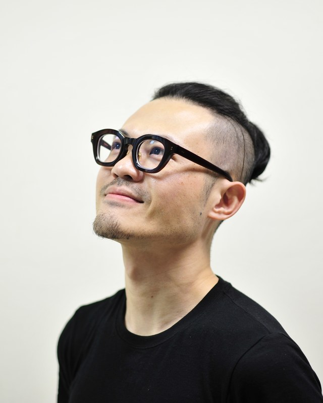

詩人 劇作家 劇場導演 策評人 客家人
自述
劉亮延，1991年畢業於國立臺東師院附設實驗小學六年五班。2006年創立李清照私人劇團感傷動作派。2015年取得國立交通大學社會與文化研究所文學博士。2024年起任教於國立臺東大學兒童文學研究所。著有劇作集《婦女生活十一種》（2021），詩集《牡丹刑》（2008）《有鬼》（2002）《你那菊花的年代》（1999）。編導劇目二十餘齣，策劃執行演出逾四百場，並製作四張專輯：《曹七巧》劇場原創音樂原聲帶（2008）、《馬伯司氏：劉欣然爵士京劇同名專輯》（2017）、《湘蘭圖：爵士臺灣戲曲現場收音專輯》（2024）、《歌仔曹七巧：台灣爵士戲曲專輯》（2025）。
童話的啟蒙讀本是《三隻小豬》。大野狼一吹氣，房子就全倒，這個畫面他一直記得，以致颱風至今在他眼裡都還是童話。他對草屋與木屋的屋主始終同情不捨，也覺得故事加在他們身上的道德評價莫名其妙，反叛之心從這裡開始。後來經歷地震，他知道磚房一樣會倒，反而替大野狼委屈，也為《三隻小豬》嫌貧愛富、幸災樂禍的階級觀念感到難過。兒時的閱讀啟蒙是英文漢聲出版社1982年出版的十二冊《中國童話》，古裝、妖怪、苦命青衣與大俠刺客，很早就成為他的平行宇宙，也讓他與現代社會長期格格不入。30歲以來投身戲曲創作，他才確認這是童年閱讀史留下的創傷。
About
Liu Liang-Yen graduated in 1991 from National Taitung University Laboratory Elementary School, where he was in Class 5 of the sixth grade. In 2006 he founded the Physical Sentimental Theatre Company of Lee Qing Zhao the Private. He received his Ph.D. in Literature from the Institute of Social Research and Cultural Studies, National Chiao Tung University, in 2015, and in 2024 returned to National Taitung University to teach at its Graduate Institute of Children's Literature. He is the author of the play collection Lifestyles of Eleven Women (2021) and three books of poems, Ordeal on Peony (2008), Ghosts (2002), and Your Chrysanthemum Years (1999). He has written and directed more than twenty productions, produced over four hundred performances, and made four albums: Tsao Chi-chiao: Original Theatre Soundtrack (2008), Lady Macbeth: Liu Hsin-jan's Jazz Jingju Album (2017), Lady Orchid: A Live-Recorded Jazz Taiwanese Xiqu Album (2024), and Tsô Tshit Khá: A Taiwanese Jazz Xiqu Album (2025).
His first primer in fairy tales was The Three Little Pigs. The wolf huffs, and the houses fall down: the picture never left him, and to this day a typhoon still looks to him like something out of a storybook. He has always felt sorry for the pigs who built in straw and in wood, and never understood what they had done to deserve the moral of the story; that is where his rebelliousness began. Then he lived through an earthquake, learned that brick houses fall down too, and started to feel that the wolf had been hard done by, and that a story which fawns on the well-off, sneers at the poor, and cheers at other people's misfortune was a sad thing to give a child. His reading proper began with the twelve volumes of Chinese Fairy Tales that Echo Publishing brought out in 1982. Period costume, monsters, long-suffering qingyi heroines, and knight-errant assassins became his parallel universe very early, and have kept him out of step with the modern world ever since. Only after he turned thirty and threw himself into xiqu did he confirm what it was: the trauma left by his childhood reading.
社群